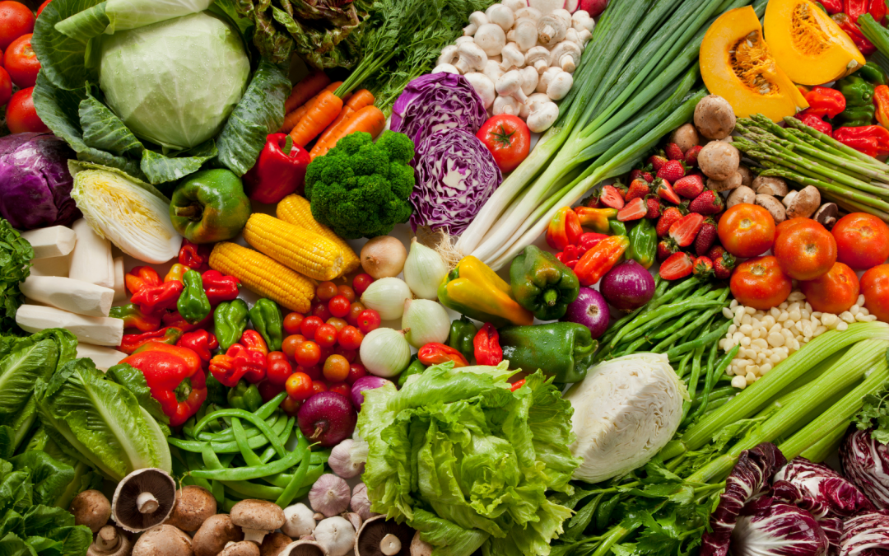

Популярні овочі
Коренеплоди
До коренеплодів відносяться:

Різноманітні овочі на столі
Листові овочі
Приклади листових овочів:
- Салат
- Шпинат
- Капуста
- Петрушка
Користь овочів для здоров'я
Овочі містять багато вітамінів, мінералів та клітковини, які необхідні для здорового харчування.
"Щоденне споживання достатньої кількості овочів є важливою складовою здорового харчування."
Рецепти з овочами
Спробуйте ці смачні страви:
Овочеве рагу
Інгредієнти:
- Картопля - 3 шт.
- Морква - 2 шт.
- Цибуля - 1 шт.
- Кабачок - 1 шт.
- Болгарський перець - 1 шт.
Приготування:
- Нарізати овочі кубиками
- Обсмажити цибулю
- Додати інші овочі і тушкувати 20 хвилин
Салат зі свіжих овочів
Інгредієнти:
- Цибуля - 1 шт.
- Болгарський жовтий перець - 2 шт.
- Болгарський червоний перець - 2 шт.
- Огірок - 1 шт.
Приготування:
- Тонко нарізати овочі
- Перець помити та очистити від зерен
- Об'єднати всі овочі. Масло додавати за бажанням
Запечені овочі
Інгредієнти:
- Кабачок - 1 шт.
- Печериці - 8 шт.
- Морква - 1 шт.
- Огірок - 1 шт.
- Цвітна капуста - 300 г
Приготування:
- Кабачок нарізати великими брусками
- Цвітну капусту розібрати на суцвіття
- Викласти овочі на деко, випікати у прогрітій духовці 30 хв
Вирощування овочів
Поради для домашнього городника:
- Виберіть сонячне місце
- Підготуйте ґрунт
- Дотримуйтесь графіку поливу